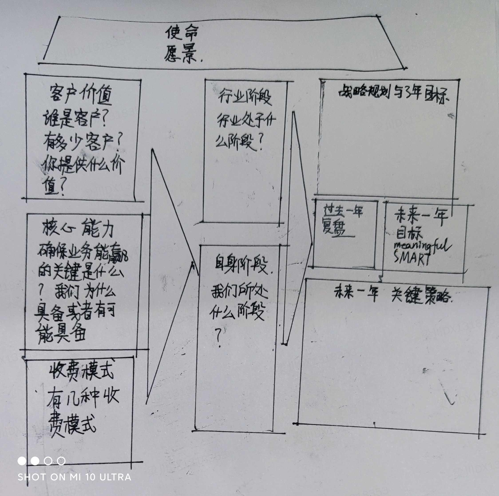

<!DOCTYPE html>
<html>
<head><meta name="generator" content="Hexo 3.9.0">
  <meta charset="utf-8">
  
  <title>中高层领导力 | 守株阁</title>
  <meta name="viewport" content="width=device-width, initial-scale=1, maximum-scale=1">
  <meta name="description" content="商业思维 建立商业思维 建立远见（forsight）：知道自己的行业和企业的终局是怎样的。 洞见（insight）：对行业的定律有自己的理解，“我的网页打开速度，每变慢一秒钟，我的转化率会下降X个百分点”。    管理者 建设团队： 直接产出 管理其他人 管理管理者 管理部门    三高三低      战略卡片-房子图房子图要分平台房子图和业务房子图。  商业模式三要素 客户价值：谁是客户？有多少">
<meta name="keywords" content="管理">
<meta property="og:type" content="article">
<meta property="og:title" content="中高层领导力">
<meta property="og:url" content="http://yoursite.com/2021/02/20/中高层领导力/index.html">
<meta property="og:site_name" content="守株阁">
<meta property="og:description" content="商业思维 建立商业思维 建立远见（forsight）：知道自己的行业和企业的终局是怎样的。 洞见（insight）：对行业的定律有自己的理解，“我的网页打开速度，每变慢一秒钟，我的转化率会下降X个百分点”。    管理者 建设团队： 直接产出 管理其他人 管理管理者 管理部门    三高三低      战略卡片-房子图房子图要分平台房子图和业务房子图。  商业模式三要素 客户价值：谁是客户？有多少">
<meta property="og:locale" content="zh-Hans">
<meta property="og:image" content="http://yoursite.com/2021/02/20/中高层领导力/战略卡片-房子图.jpg">
<meta property="og:updated_time" content="2021-02-20T05:29:26.843Z">
<meta name="twitter:card" content="summary">
<meta name="twitter:title" content="中高层领导力">
<meta name="twitter:description" content="商业思维 建立商业思维 建立远见（forsight）：知道自己的行业和企业的终局是怎样的。 洞见（insight）：对行业的定律有自己的理解，“我的网页打开速度，每变慢一秒钟，我的转化率会下降X个百分点”。    管理者 建设团队： 直接产出 管理其他人 管理管理者 管理部门    三高三低      战略卡片-房子图房子图要分平台房子图和业务房子图。  商业模式三要素 客户价值：谁是客户？有多少">
<meta name="twitter:image" content="http://yoursite.com/2021/02/20/中高层领导力/战略卡片-房子图.jpg">
  
    <link rel="alternate" href="/atom.xml" title="守株阁" type="application/atom+xml">
  
  
    <link rel="icon" href="/favicon.png">
  
  
  <link rel="stylesheet" href="/css/style.css">
  

<link rel="stylesheet" href="/css/prism.css" type="text/css">
<link rel="stylesheet" href="/css/prism-line-numbers.css" type="text/css"></head>
</html>
<body>
  <div id="container">
    <div id="wrap">
      <header id="header">
  <div id="banner"></div>
  <div id="header-outer" class="outer">
    
    <div id="header-inner" class="inner">
      <nav id="sub-nav">
        
          <a id="nav-rss-link" class="nav-icon" href="/atom.xml" title="RSS Feed"></a>
        
        <a id="nav-search-btn" class="nav-icon" title="搜索"></a>
      </nav>
      <div id="search-form-wrap">
        <form action="//google.com/search" method="get" accept-charset="UTF-8" class="search-form"><input type="search" name="q" class="search-form-input" placeholder="Search"><button type="submit" class="search-form-submit">&#xF002;</button><input type="hidden" name="sitesearch" value="http://yoursite.com"></form>
      </div>
      <nav id="main-nav">
        <a id="main-nav-toggle" class="nav-icon"></a>
        
          <a class="main-nav-link" href="/">首页</a>
        
          <a class="main-nav-link" href="/archives">归档</a>
        
          <a class="main-nav-link" href="/about">关于</a>
        
      </nav>
      
    </div>
    <div id="header-title" class="inner">
      <h1 id="logo-wrap">
        <a href="/" id="logo">守株阁</a>
      </h1>
      
        <h2 id="subtitle-wrap">
          <a href="/" id="subtitle">一切都是守株待兔，如切如磋，如琢如磨。I am just joking.</a>
        </h2>
      
    </div>
  </div>
</header>
      <div class="outer">
        <section id="main"><article id="post-中高层领导力" class="article article-type-post" itemscope itemprop="blogPost">
  <div class="article-meta">
    <a href="/2021/02/20/中高层领导力/" class="article-date">
  <time datetime="2021-02-20T03:07:00.000Z" itemprop="datePublished">2021-02-20</time>
</a>
    
  </div>
  <div class="article-inner">
    
    
      <header class="article-header">
        
  
    <h1 class="article-title" itemprop="name">
      中高层领导力
    </h1>
  

      </header>
    
    <div class="article-entry" itemprop="articleBody">
      
        <!-- Table of Contents -->
        
        <h1 id="商业思维"><a href="#商业思维" class="headerlink" title="商业思维"></a>商业思维</h1><ul>
<li>建立商业思维<ul>
<li>建立远见（forsight）：知道自己的行业和企业的终局是怎样的。</li>
<li>洞见（insight）：对行业的定律有自己的理解，“我的网页打开速度，每变慢一秒钟，我的转化率会下降X个百分点”。</li>
</ul>
</li>
</ul>
<h1 id="管理者"><a href="#管理者" class="headerlink" title="管理者"></a>管理者</h1><ul>
<li>建设团队：<ul>
<li>直接产出</li>
<li>管理其他人</li>
<li>管理管理者</li>
<li>管理部门</li>
</ul>
</li>
</ul>
<h1 id="三高三低"><a href="#三高三低" class="headerlink" title="三高三低"></a>三高三低</h1><div class="post-svg-container"><br>    <object type="image/svg+xml" data="三高三低.svg"></object><br></div>

<h1 id="战略卡片-房子图"><a href="#战略卡片-房子图" class="headerlink" title="战略卡片-房子图"></a>战略卡片-房子图</h1><p>房子图要分平台房子图和业务房子图。</p>
<p></p>
<h1 id="商业模式三要素"><a href="#商业模式三要素" class="headerlink" title="商业模式三要素"></a>商业模式三要素</h1><ul>
<li><p>客户价值：谁是客户？有多少客户？你提供什么价值？</p>
</li>
<li><p>核心能力：确保业务能赢的关键能力是什么？我们为什么具备或者有可能具备？</p>
</li>
<li><p>收费模式：分为哪几种收费模式？比如，一次性收入，附加长期维护收入。</p>
</li>
</ul>
<h1 id="商业分析方法论：三层四面"><a href="#商业分析方法论：三层四面" class="headerlink" title="商业分析方法论：三层四面"></a>商业分析方法论：三层四面</h1><ul>
<li>三层：市场总量、互联网化率、公司占有率</li>
<li>四面：用户量、订单量、收入、利润</li>
</ul>
<h1 id="【观测、解释、预测、影响-创造】方法论"><a href="#【观测、解释、预测、影响-创造】方法论" class="headerlink" title="【观测、解释、预测、影响/创造】方法论"></a>【观测、解释、预测、影响/创造】方法论</h1><p>【观测】：知道发生了什么事情，要对情况很了解，包含了观察和测量。<br>【解释】：解释这个事情，可以用理论自恰说明。<br>【预测】：预测将来会发生什么事情。如果你观测的数据很全面很准确，解释是很有信心的，你就能预测将来会发生什么情况。如果一个理论可以解释现在，还能预测未来，那么这个理论比较靠谱，认知比较深入。<br>【影响/创造】：知道什么输入能导致什么输出，如何改变输入从而改变输出。</p>
<h1 id="什么是战略"><a href="#什么是战略" class="headerlink" title="什么是战略"></a>什么是战略</h1><p>战略是做少数艰难而正确的决定。“上兵伐谋，其次伐交，其次伐兵，其下攻城”。战略讨论清楚很重要，战略决定了你用什么方式赢这个事情，以及这个战略路径下什么是重要的。你的战略路径决定了你的资源分配。先确定什么是值得争取的，再看从什么路径来达成。</p>
<h1 id="SWOT"><a href="#SWOT" class="headerlink" title="SWOT"></a>SWOT</h1><p>《营销管理》（第14版） ，菲利普•科特勒、凯文•莱恩•凯勒著，王永贵等译</p>
<h1 id="波特五力模型"><a href="#波特五力模型" class="headerlink" title="波特五力模型"></a>波特五力模型</h1><p>《竞争战略》，迈克尔·波特著，陈丽芳译</p>
<h1 id="波特竞争战略"><a href="#波特竞争战略" class="headerlink" title="波特竞争战略"></a>波特竞争战略</h1><p>《竞争战略》，迈克尔·波特著，陈丽芳译，中信出版社</p>
<h1 id="杨三角"><a href="#杨三角" class="headerlink" title="杨三角"></a>杨三角</h1><p>《组织能力的杨三角》，杨国安著，机械工业出版社</p>

      
    </div>
    <footer class="article-footer">
      <a data-url="http://yoursite.com/2021/02/20/中高层领导力/" data-id="ckmesyqv300mr0ba1ph0ix4sx" class="article-share-link">分享</a>
      
      
      
  <ul class="article-tag-list"><li class="article-tag-list-item"><a class="article-tag-list-link" href="/tags/管理/">管理</a></li></ul>

    </footer>
  </div>
  
    
 <script src="/jquery/jquery.min.js"></script>
  <div id="random_posts">
    <h2>推荐文章</h2>
    <div class="random_posts_ul">
      <script>
          var random_count =4
          var site = {BASE_URI:'/'};
          function load_random_posts(obj) {
              var arr=site.posts;
              if (!obj) return;
              // var count = $(obj).attr('data-count') || 6;
              for (var i, tmp, n = arr.length; n; i = Math.floor(Math.random() * n), tmp = arr[--n], arr[n] = arr[i], arr[i] = tmp);
              arr = arr.slice(0, random_count);
              var html = '<ul>';
            
              for(var j=0;j<arr.length;j++){
                var item=arr[j];
                html += '<li><strong>' + 
                item.date + ':&nbsp;&nbsp;<a href="' + (site.BASE_URI+item.uri) + '">' + 
                (item.title || item.uri) + '</a></strong>';
                if(item.excerpt){
                  html +='<div class="post-excerpt">'+item.excerpt+'</div>';
                }
                html +='</li>';
                
              }
              $(obj).html(html + '</ul>');
          }
          $('.random_posts_ul').each(function () {
              var c = this;
              if (!site.posts || !site.posts.length){
                  $.getJSON(site.BASE_URI + 'js/posts.js',function(json){site.posts = json;load_random_posts(c)});
              } 
               else{
                load_random_posts(c);
              }
          });
      </script>
    </div>
  </div>

    
<nav id="article-nav">
  
    <a href="/2021/03/01/HATP-问题/" id="article-nav-newer" class="article-nav-link-wrap">
      <strong class="article-nav-caption">上一篇</strong>
      <div class="article-nav-title">
        
          HATP 问题
        
      </div>
    </a>
  
  
    <a href="/2021/02/10/《恰如其分的软件架构》/" id="article-nav-older" class="article-nav-link-wrap">
      <strong class="article-nav-caption">下一篇</strong>
      <div class="article-nav-title">《恰如其分的软件架构》</div>
    </a>
  
</nav>

  
</article>
 
     
  <div class="comments" id="comments">
    
     
       
      <div id="cloud-tie-wrapper" class="cloud-tie-wrapper"></div>
    
       
      
      
  </div>
 
  

</section>
           
    <aside id="sidebar">
  
    

  
    
    <div class="widget-wrap">
    
      <div class="widget" id="toc-widget-fixed">
      
        <strong class="toc-title">文章目录</strong>
        <div class="toc-widget-list">
              <ol class="toc"><li class="toc-item toc-level-1"><a class="toc-link" href="#商业思维"><span class="toc-number">1.</span> <span class="toc-text">商业思维</span></a></li><li class="toc-item toc-level-1"><a class="toc-link" href="#管理者"><span class="toc-number">2.</span> <span class="toc-text">管理者</span></a></li><li class="toc-item toc-level-1"><a class="toc-link" href="#三高三低"><span class="toc-number">3.</span> <span class="toc-text">三高三低</span></a></li><li class="toc-item toc-level-1"><a class="toc-link" href="#战略卡片-房子图"><span class="toc-number">4.</span> <span class="toc-text">战略卡片-房子图</span></a></li><li class="toc-item toc-level-1"><a class="toc-link" href="#商业模式三要素"><span class="toc-number">5.</span> <span class="toc-text">商业模式三要素</span></a></li><li class="toc-item toc-level-1"><a class="toc-link" href="#商业分析方法论：三层四面"><span class="toc-number">6.</span> <span class="toc-text">商业分析方法论：三层四面</span></a></li><li class="toc-item toc-level-1"><a class="toc-link" href="#【观测、解释、预测、影响-创造】方法论"><span class="toc-number">7.</span> <span class="toc-text">【观测、解释、预测、影响/创造】方法论</span></a></li><li class="toc-item toc-level-1"><a class="toc-link" href="#什么是战略"><span class="toc-number">8.</span> <span class="toc-text">什么是战略</span></a></li><li class="toc-item toc-level-1"><a class="toc-link" href="#SWOT"><span class="toc-number">9.</span> <span class="toc-text">SWOT</span></a></li><li class="toc-item toc-level-1"><a class="toc-link" href="#波特五力模型"><span class="toc-number">10.</span> <span class="toc-text">波特五力模型</span></a></li><li class="toc-item toc-level-1"><a class="toc-link" href="#波特竞争战略"><span class="toc-number">11.</span> <span class="toc-text">波特竞争战略</span></a></li><li class="toc-item toc-level-1"><a class="toc-link" href="#杨三角"><span class="toc-number">12.</span> <span class="toc-text">杨三角</span></a></li></ol>
          </div>
      </div>
    </div>

  
    

  
    
  
    
  
    

  
    
  
    <!--微信公众号二维码-->


  
</aside>

      </div>
      <footer id="footer">
  
  <div class="outer">
    <div id="footer-left">
      &copy; 2014 - 2021 magicliang&nbsp;|&nbsp;
      主题 <a href="https://github.com/giscafer/hexo-theme-cafe/" target="_blank">Cafe</a>
    </div>
     <div id="footer-right">
      联系方式&nbsp;|&nbsp;magicliang@qq.com
    </div>
  </div>
</footer>
 <script src="/jquery/jquery.min.js"></script>
    </div>
    <nav id="mobile-nav">
  
    <a href="/" class="mobile-nav-link">首页</a>
  
    <a href="/archives" class="mobile-nav-link">归档</a>
  
    <a href="/about" class="mobile-nav-link">关于</a>
  
</nav>
    
<script>
// Elevator script included on the page, already.
window.onload = function() {
  var elevator = new Elevator({
    selector:'.back-to-top-btn',
    element: document.querySelector('.back-to-top-btn'),
    duration: 1000 // milliseconds
  });
}
</script>
      

  
    <script>
      var cloudTieConfig = {
        url: document.location.href, 
        sourceId: "",
        productKey: "e2fb4051c49842688ce669e634bc983f",
        target: "cloud-tie-wrapper"
      };
    </script>
    <script src="https://img1.ws.126.net/f2e/tie/yun/sdk/loader.js"></script>
    

  


<!-- author:forvoid begin -->
<!-- author:forvoid begin -->

<!-- author:forvoid end -->

<!-- author:forvoid end -->


  
    <script type="text/x-mathjax-config">
      MathJax.Hub.Config({
        tex2jax: {
          inlineMath: [ ['$','$'], ["\\(","\\)"]  ],
          processEscapes: true,
          skipTags: ['script', 'noscript', 'style', 'textarea', 'pre', 'code']
        }
      })
    </script>

    <script type="text/x-mathjax-config">
      MathJax.Hub.Queue(function() {
        var all = MathJax.Hub.getAllJax(), i;
        for (i=0; i < all.length; i += 1) {
          all[i].SourceElement().parentNode.className += ' has-jax';
        }
      })
    </script>
    <script type="text/javascript" src="https://cdn.rawgit.com/mathjax/MathJax/2.7.1/MathJax.js?config=TeX-AMS-MML_HTMLorMML"></script>
  


 <script src="/js/is.js"></script>


  <link rel="stylesheet" href="/fancybox/jquery.fancybox.css">
  <script src="/fancybox/jquery.fancybox.pack.js"></script>


<script src="/js/script.js"></script>
<script src="/js/elevator.js"></script>
  </div>
</body>
</html>